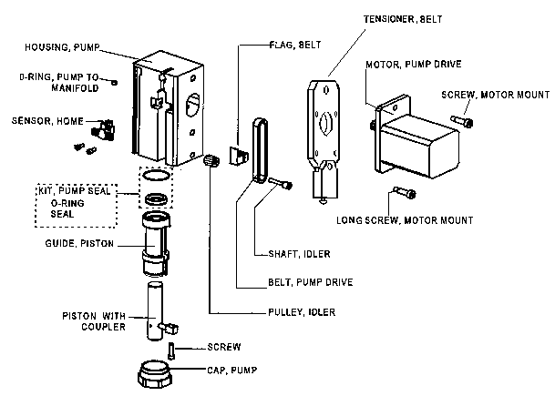
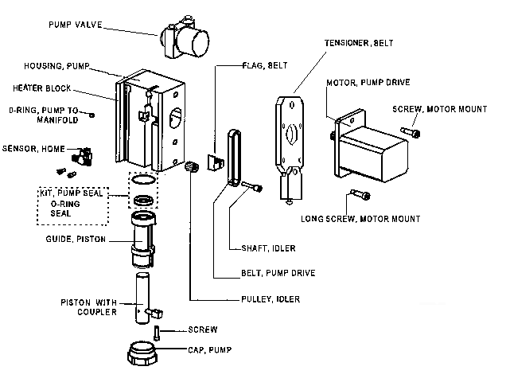
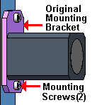
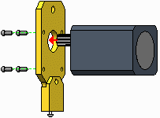
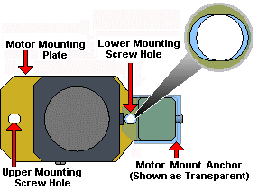
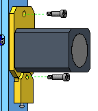
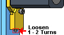

Installing Pump Belt and Tensioner Mounting Bracket
This procedure describes how to replace a pump belt and install the tensioner mounting bracket.
Perform this procedure when:
Replacing a pump belt (precision, wash, and substrate).
Troubleshooting pump backlash errors.
Installing belt tensioner
Note: The Tensioner Mounting Bracket is integrated into the Motor Mounting Bracket. Installation of the bracket prevents slippage backlash errors upon new belt installation.
Caution: The substrate pump belt is a different part number than the precision pump belt. The substrate pump belt is the black neoprene belt and black belt clip. Do not install a precision pump belt in the substrate pump, the belt size is not the same.
Figure 58: Correct assembly of tensioning bracket on precision pumpFigure 59: Correct assembly of tensioner bracket on wash pump

Figure 60: Correct assembly of tensioner bracket on substrate pump

Prepare to install the tensioner bracket and belt.
Note: Only one of these screws will be used with the tensioner mounting bracket.

Remove black motor mount plate from motor (four screws).
Discard the black motor mount plate.
Remove the screw securing the home flag to the pump piston, remove the piston end cap, and pull the piston out of the assembly.
Note: The piston is removed to ensure there is no tension on the motor when installing the tensioner.
Installing the tensioner mounting bracket and motor to the housing.
Attach the tensioner mounting bracket to the motor using the four screws from the black motor mount plate.
Note: The tensioner mounting bracket replaces the black motor mounting bracket.

Tighten the tension adjustment screw so that the hole in the motor mount anchor and the slot in the motor mounting plate are aligned.
Note: Accurate alignment is achieved when the long screw slides easily through the lower mounting screw hole.

Replace the belt (If necessary)
Remove the belt idler pulley (one screw), belt, and belt flag.
Remove the home flag from the old belt.
Attach the home flag to the new belt.
Install the idler pulley, new belt, and home flag into the pump.
Note: Orient the home flag with the flag end pointed towards the pump home sensor.
Place the motor gear through the acrylic slot and into the belt.
Attach the motor assembly (tensioner mounting bracket and motor) to the acrylic housing (two screws). Reuse one short screw in the tensioner mounting bracket top hole. Use the new long screw in the bottom hole.
Note: The long screw for the bottom hole of the tensioner mounting bracket is included with the tensioner mounting bracket kit.

Loosen the two motor assembly screw 1/8 turn to allow for tensioning.
Loosen the tension adjustment screw 1 to 2 turns, until the screw head separates from the surface leaving a visible space to allow the tensioner to tension the belt correctly.

Secure the two motor assembly screws.
Note: The tension adjustment screw requires no further adjustment. Leave the screw at its current position. If the pump ever requires disassembly, this screw can be used to re-establish belt tension.
Re-install the pump piston and attach the home flag to the piston coupler.
Insert the tip of a small screwdriver (straight slot type) into the gap between the flag and acrylic housing, then install the flag screw and tighten it to secure the home flag to the piston coupler.
Caution: When securing the screw, do not let the home flag rotate to the side. A tilted flag can cause pump motion or backlash errors.
Caution: Do not get red loctite residue into the piston guide slot. Use canned air to remove any visible loctite residue.